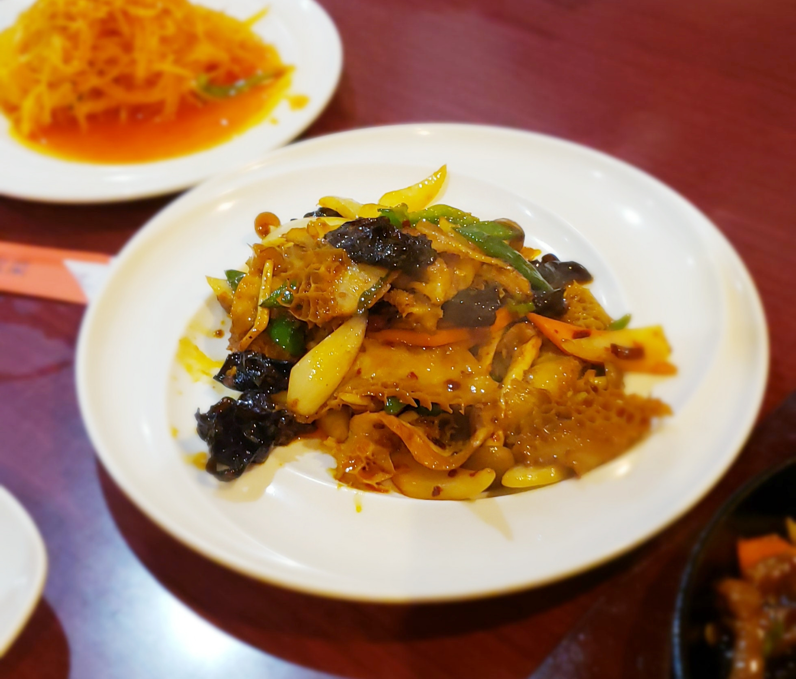
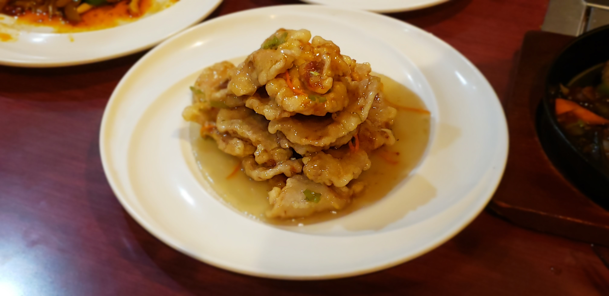
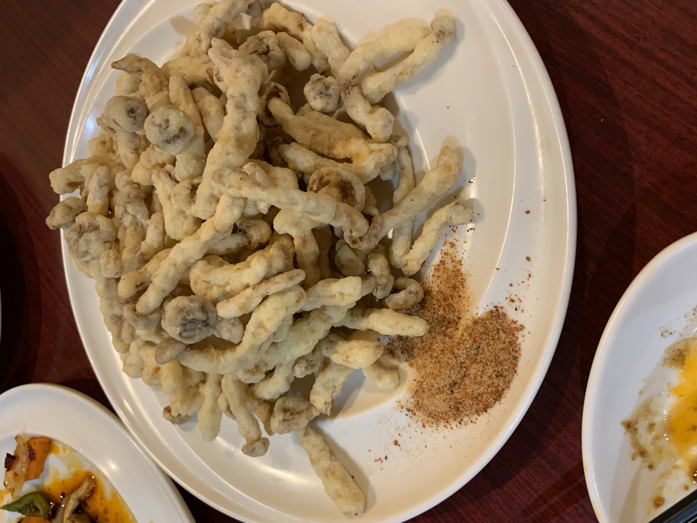

評価
-

Aさん
肉と野菜がマッチしていて美味しいかった。
Kさん
肉のジューシーさと野菜の甘さが混ざり合い口の中で踊る感覚があってとてもおいしい。
Sさん
本格の中国味オイスターソースを入れた、とてもおいしい料理。
Tさん
牛肉の焼き具合がちょうどいいのでシャキッと口当たりが良い。 -

Aさん
歯ごたえがあって美味しいかった。
Kさん
甘さと辛さが併せて脂っぽい感覚がなくうまい。
Sさん
日本人が食べない牛ハチの巣がピリ辛炒めで美味しい。
Tさん
ちょっと辛いけど、うまい。 -

Aさん
甘味があってよく箸が進んだ料理。
Kさん
黄金な色感をもち甘酸っぱい味がして美味しい。
Sさん
日本の中華料理店にはない料理、甘酸っぱい味、中国で大人気の料理。
Tさん
甘酸っぱい味からこの料理が好きになっている。 -

Aさん
とても辛くて美味しかった。
Kさん
あんまり辛い物好きではないが美味しい。
Sさん
ほぼ中国の味と同じであるが辛みが不足している。
Tさん
この料理を食べるとびりびり感じが起こした。 -
Aさん
キャベツの歯ごたえが残っていて美味しかった。
Kさん
肉とキャベツの味わいが混ざりあって、みんなが好きになれる味。
Sさん
中国の味とは異なり、日本人の好みに合わせて作られている感じ。
Tさん
超おいしい。 -

Aさん
量がたくさんあった。
Kさん
サクサク感がありキノコの香りもとてもよく美味しい。
Sさん
中国のどんな家庭でも作ることができる。
Tさん
パリパリ感があり、うまい。 -

Aさん
ジャガイモの食感が美味しかった。
Kさん
中国の家庭料理として有名でありながらジャガイモの食感がよかった。
Sさん
基本的に中国のすべてのレストランにはこの料理がある、人気の料理です。
Tさん
非常に爽快で口にあう。 -
Aさん
日本の焼き鳥に似ていた。
Kさん
ちょっと硬めですか臭みもなく美味しい。
Sさん
本格中国の料理と同じ味でありクミンパウダーも入ってとてもおいしい。
Tさん
おいしい！ -
Aさん
少し癖があったが美味しかった。
Kさん
ラムの臭みがなく、日本人も食べられる程度に焼き美味しい。
Sさん
ラムの臭みを取り除き、チリとクミンを加えて美味しい。
Tさん
味がよく、臭みがない。 -

Aさん
美味しかった。
Kさん
脂がのり、ウェルダン的な焼き具合でうまさが伝わっていた。
Sさん
日本の焼き鳥とは違い唐辛子とクミンパウダーを入れて焼いてとてもおいしい。
Tさん
焼き程度がよく、脂がのっておいしい！